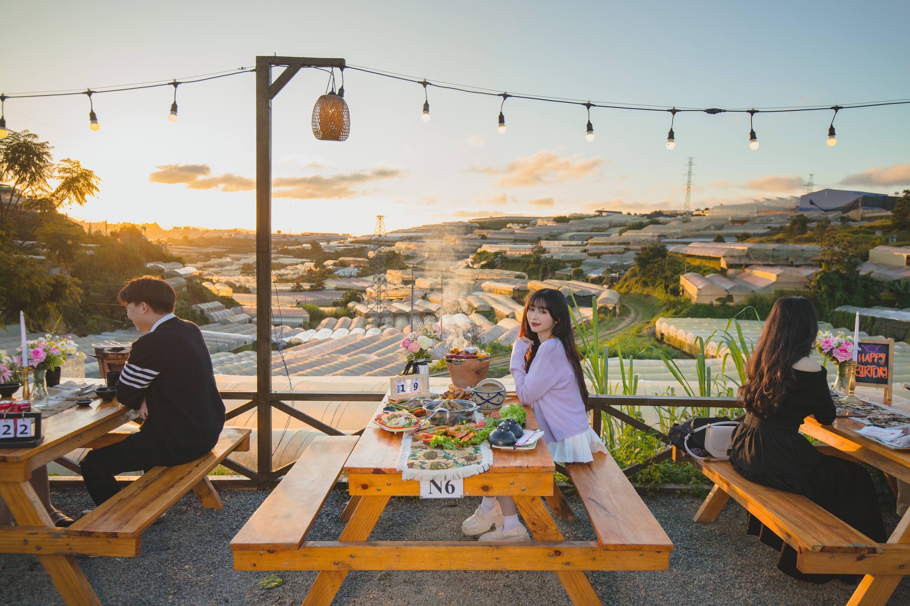

Đường Huỳnh Tấn Phát — Con đường ẩm thực mới nổi
Nằm ở phường 11, đường Huỳnh Tấn Phát nổi lên như tuyến phố ẩm thực mới của Đà Lạt nhờ vị trí trên cao, view thung lũng nhà lồng tuyệt đẹp. Nhiều quán ăn mới mở ở đây tận dụng địa thế để tạo không gian ngoài trời thoáng đãng.
Trạm Dừng Chill — Quán nướng BBQ view xe lửa
Tọa lạc tại 111 Huỳnh Tấn Phát, Trạm Dừng Chill là quán nướng nổi tiếng nhất trên con đường này. Điểm đặc biệt: view hoàng hôn, xe lửa chạy ngang, biển sao nhà lồng về đêm. Menu đa dạng từ BBQ hải sản, bò Mỹ đến lẩu nóng. Giá từ 95.000đ/người.


Các quán ăn khác trên đường Huỳnh Tấn Phát
Ngoài Trạm Dừng Chill, trên đường Huỳnh Tấn Phát còn có nhiều quán cafe, quán ăn nhỏ phục vụ các món Đà Lạt truyền thống. Từ phở, bún bò đến các món nướng dân dã — bạn có thể dạo cả con đường để khám phá ẩm thực đa dạng.

Mẹo di chuyển đến đường Huỳnh Tấn Phát
Từ trung tâm Đà Lạt (chợ đêm), bạn chạy xe máy khoảng 10-15 phút theo hướng ga Đà Lạt. Đường dốc nhưng dễ đi, có chỗ đỗ xe rộng rãi. Nên đi lúc chiều tối để ngắm hoàng hôn trên đường Huỳnh Tấn Phát cực đẹp.
Kết luận
Đường Huỳnh Tấn Phát đang trở thành điểm đến ẩm thực hot của Đà Lạt. Nếu chỉ chọn một quán, hãy đến Trạm Dừng Chill để trải nghiệm nướng BBQ view đẹp nhất con đường. Đặt bàn ngay!